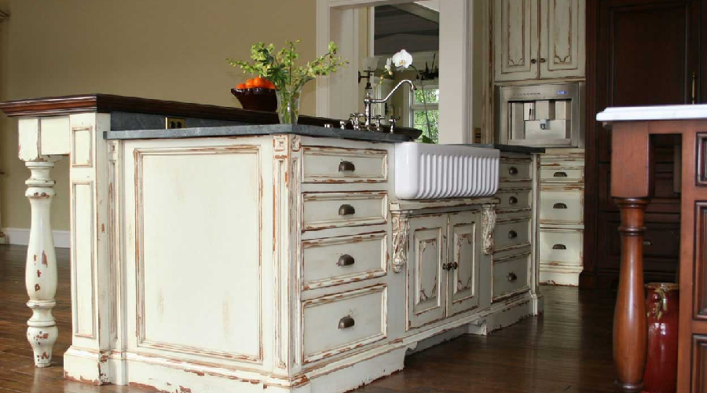
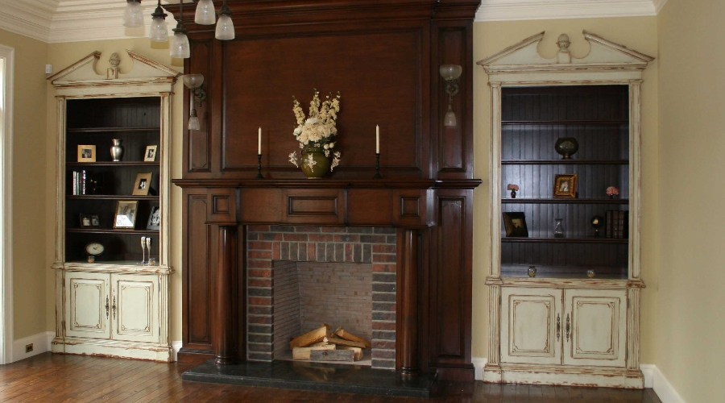
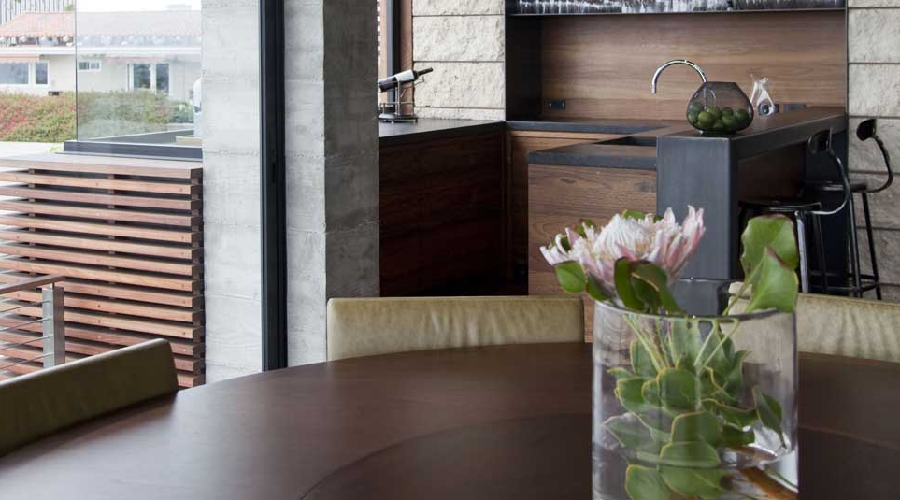
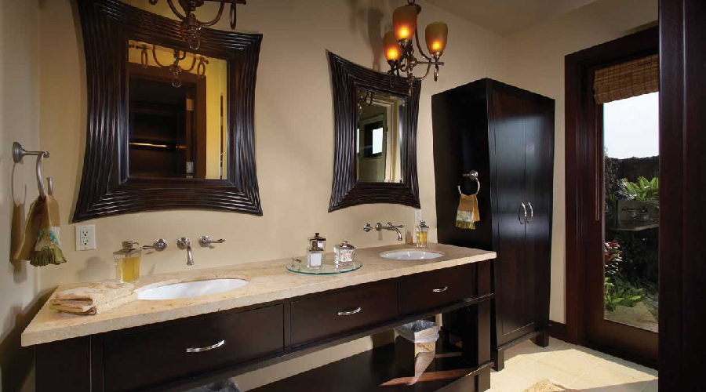
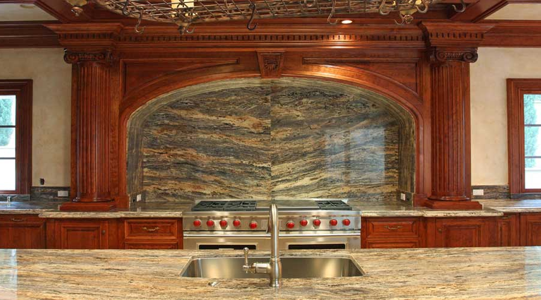

What are
rustic cabinets?
Rustic cabinetry embraces the natural character of wood — the grain variation, the knots, the texture of hand-planed surfaces, the warmth of aged finishes — rather than minimizing it. Where other styles seek uniformity, rustic design celebrates the individuality of the material. Every piece tells a different story because every piece of wood is different.
Done well, rustic cabinetry is not raw or unfinished. It is deliberately crafted to communicate warmth, permanence, and a connection to the natural world. At its finest, it draws on the same tradition as fine furniture-making — just applied to a different visual language.

What makes rustic cabinetry
feel authentic?
The authenticity of rustic cabinetry lives entirely in the material selection and finishing approach. Knotty alder, reclaimed oak, hickory with natural character marks, and distressed pine are all materials that rustic design can use — but only if the cabinetmaker knows how to select, dry, and work them correctly. A poor material choice or a careless finish ruins the effect immediately.
Hardware in rustic cabinetry carries significant visual weight. Hammered iron, oil-rubbed bronze, hand-forged pulls, and antique brass contribute to the overall warmth of the installation. At H & J, we work closely with our clients to specify hardware that completes the piece rather than undercutting it.

- Character-grade hardwoodsKnotty alder, hickory, and reclaimed oak selected for natural figure, knot placement, and consistent character marks.
- Hand-planed and distressed surfacesSurfaces worked by hand to create the texture and variation that machine-finished panels cannot replicate.
- Warm paint and stain finishesLayered stains, wax finishes, and hand-glazed effects that deepen with time rather than fading.
- Forged and antique hardwareHammered iron, oil-rubbed bronze, and hand-forged pulls that contribute to the warmth of the installation.
Rustic work built
to last
Rustic cabinetry presents a specific challenge: it must look relaxed while being structurally precise. A door that sags, a drawer that binds, or a face frame that shifts reads immediately as a construction failure, not a design feature. At H & J, we build every rustic cabinet to the same structural standard as every other project — the visual character of the material changes; the quality of the build does not.
We select character-grade hardwoods with care, working with suppliers who can provide consistent material within a single project. Our finishers understand how to develop a layered finish that ages gracefully rather than simply looking old. And our installers fit every door and drawer to the same tolerances that define our modern and contemporary work.
"Rustic does not mean rough. It means honest — and honest work requires honest craft."



Serving Newport Beach, Irvine, Laguna Beach, and Orange County.